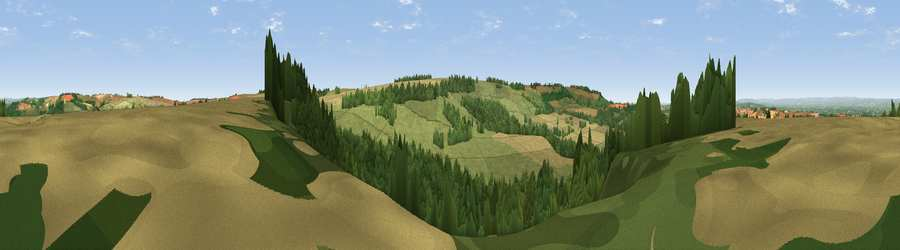

Viewpoint near North Grimston
#12078 in England · top 17% of its area beats it · near North Grimston · access?Where it is
The exact computed spot (SE 84025 65825). Click the marker for map links.
Public access: no public right of way or access land is recorded at this exact spot — it may be on private land. Computed from Natural England's CRoW access layer and OpenStreetMap rights of way — not the legal definitive map. Always verify locally.
The view, rendered

A 360° render of this exact spot computed from the terrain model, tree cover and land cover — summer colours, afternoon light, calibrated against photographs of famous viewpoints. Real trees, hedges and buildings will differ in detail.
The panorama
Grey silhouette: terrain skyline in each direction (720 bearings, Earth curvature and refraction included). Dashed green: skyline with trees (+15 m) and buildings (+8 m) as obstacles. Blue strip: how far the ground is visible on each bearing.
Where the view opens
Wedge length = distance to the farthest visible ground on that bearing (vegetation-aware). Rings at 10, 25 and 50 km.
What fills the view
42% woodland · 39% grassland · 18% cropland
Angular shares of the visible panorama (visual magnitude), not map area. Landscape diversity 0.46 (0–1 Shannon).
Key numbers
More beautiful places nearby
The staircase of upgrades: each row has a higher view potential than everything closer. Driving times are estimates from straight-line distance, calibrated against real road routing — check an actual route before setting out.
| Place | Direction | Drive | Score |
|---|---|---|---|
| Viewpoint near North Grimston | ESE · 0 km | ~1 min | 61.8 |
| Viewpoint near Birdsall | WNW · 1 km | ~3 min | 62.5 |
| Viewpoint near North Grimston | NNE · 3 km | ~8 min | 64.3 |
| Viewpoint near Birdsall | WSW · 4 km | ~9 min | 71.8 |
| Viewpoint near Settrington | NNE · 6 km | ~12 min | 72.3 |
| Viewpoint near Leavening | SW · 6 km | ~13 min | 73.7 |
| Viewpoint near Acklam | SW · 7 km | ~14 min | 73.8 |
| Seamer Beacon | NE · 27 km | ~44 min | 76.9 |
54.08150, -0.71713 · source: screening · position refined by local search. Computed location — check access rights before visiting.